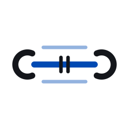
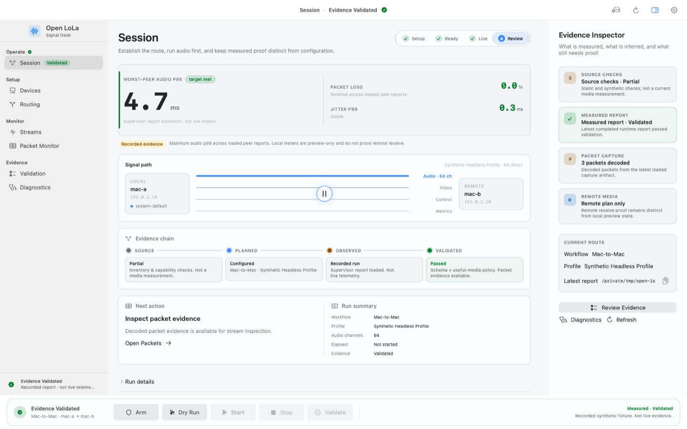

Rehearsal deskFixture data only. Every control below is simulated and nothing leaves this browser.View source

Open LoLaSignal Desk
SessionNo live connection
Session
Setup
Ready
Live
Review
Next cue
Prepare your audio path
Signal path
Audio first · staged, not connected
Local input48 kHz · ch 1–2
PCM · stereo · staged
No network traffic
Peer · output
Observed audio health
Ink only when measured
Audio p99
––.–msNot measuredNo live timing observations.
Packet loss
–.–%Not measuredNo live receive counters.
Jitter p99
––.–msNot measuredNo live packet arrivals.
Connection and media evidence
Six checks
Stage the audio path
Fixture choices
No devices are discovered and no connection is made.
Device inventory and routing
Observed audio health
Not measured
This browser receives no media and no timing observations, so every row stays empty.
Streams and preview fixture
Recorded sample values, independent of the simulated session.
Preview off · fixture only
Recording and session chat
Local rehearsal only. No file is written and no message is sent.
No local messages yet.
Packet fixture inspector
Current session evidence
This rehearsal
Live observations
Not measuredControl, media and physical devices were not exercised.
Current run report
Not validatedA simulation does not produce a runtime report.
Historical fixture report · validated sample
A separate sample: audio p99 4.7 ms · loss 0.0 % · jitter p99 0.3 ms. These values do not describe this session.
Diagnostics inspector
The native Signal Desk
Earlier offline render
An earlier offline render of the SwiftUI hierarchy with a synthetic fixture. The current native composition differs; this browser demo recreates the workspaces with fixture data and no native code.

Session workspace. The values come from a synthetic fixture, not a live run.
Four workspaces
Open one
BoundaryThese images show layout and fixture data only. They are not latency, hardware, or interoperability proof.
Local endpoint
Fixture inventory
Audio input
Studio Input 64chdemo-input-01 · 48 kHz · 64 ch
Audio output
Studio Output 64chdemo-output-01 · 48 kHz · 64 ch
Video input
Demo Camera 1080pSanitized AVFoundation inventory record
Clock
External · lockedRecorded fixture state, not a current device query
Direct peer
Sanitized addresses
Localmac-a192.0.2.10 : 40100
UDP PCM
64 × Float32
Preview off
Remotemac-b192.0.2.20 : 40100
Profile
Synthetic HeadlessAudio first · 48 kHz · 64 samples per packet